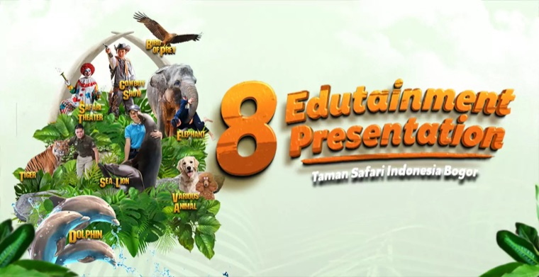
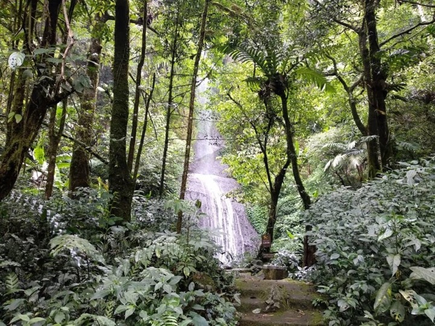
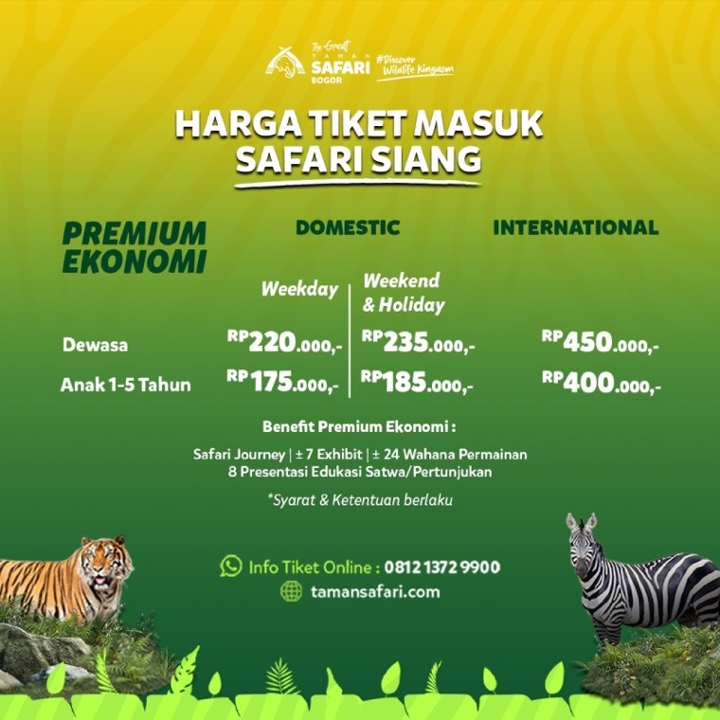
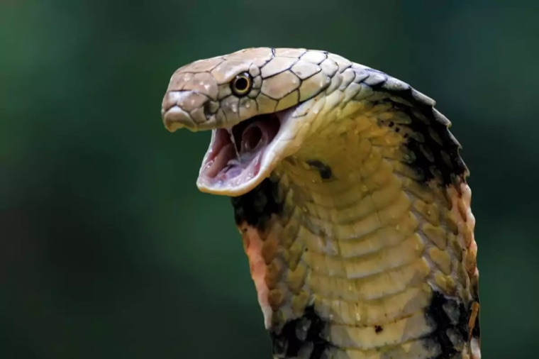

Snapshot
The Challenge
Six parks competing for the same family day-trip searches — across Google, Discover, and AI.
The Strategy
Wildlife content, commercial-intent park pages, and story-led Discover pieces.
The Outcome
545K monthly organic visits — the market #1 in Indonesian wildlife tourism.
The Challenge
Taman Safari Indonesia operates six destinations: Taman Safari Bogor, Prigen, Bali Safari & Marine Park, Jakarta Aquarium, Solo Safari, and Varuna. Each park competes for family travel and day-trip searches alongside zoos, aquariums, and travel OTAs.
The challenge was to build visibility across the portfolio while search behavior continued to expand beyond traditional Google results into Google Discover and AI-powered search.
The Approach
The work focused on three areas:
1
Wildlife Content
Created content around family search questions and species-specific topics, generating 1,520 top-3 keywords and 1,196 Google AI Overview appearances.
2
Commercial Search
Optimized commercial pages to capture high-intent travel searches, reaching an average position of 5.3 and driving 32.25% month-over-month click growth in December.
3
Wildlife Search Authority
Turned high-volume wildlife searches into site visits while building Taman Safari's authority as a trusted educational source.
Work Showcase
A few examples of the work.

Wildlife Education Content
Jadwal Show & Pertunjukan Edukasi Taman Safari Bogor
My contribution: Reviewed and improved content descriptions to make information clearer and easier for search engines and AI systems to understand.
View Page ↗

Family Travel Content
6 Wisata Bogor yang Cocok untuk Liburan Seru Bersama Keluarga
My contribution: Keyword mapping, content briefing, and content review for a family travel topic that reached Google Discover.
635 clicks from Google Discover
View Live Article ↗

Ticket Price Optimization
Update Harga Tiket Taman Safari Bogor Terbaru 2026
My contribution: Updated ticket pricing content to keep information accurate and current.
+32% clicks in December
View Live Article ↗

Wildlife Content
Jenis Ular Eksotis Indonesia: Edukasi & Konservasi
My contribution: Keyword mapping, content briefing, and content review for an animal-focused article.
32,854 clicks
View Live Article ↗
Execution Highlights
🔗
Internal Linking Across Parks
Connected six park websites with internal links to help users and search engines discover related destinations, attractions, and wildlife content.
📰
Google Discover Content
Created content around seasonal interests and trending topics, with the top-performing article generating 32,854 clicks.
🎟️
Seasonal Search Planning
Planned content and SEO efforts around peak travel periods, contributing to +32% clicks in December and +36% in March.
🤖
AI Search Visibility
Optimized wildlife and family travel content to improve visibility in AI search, generating 1,196 Google AI Overview appearances and 1,520 top-3 keywords.
Results
545K
monthly organic visits — market #1
1,520
keywords in Google's top 3
32.8K
clicks from a single Google Discover story